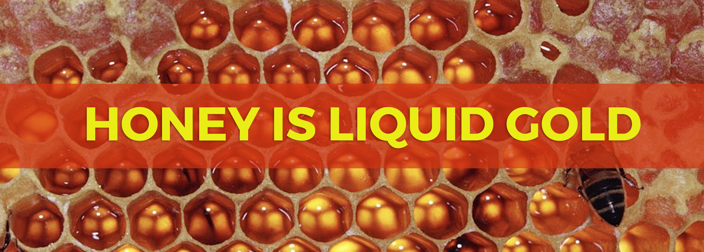
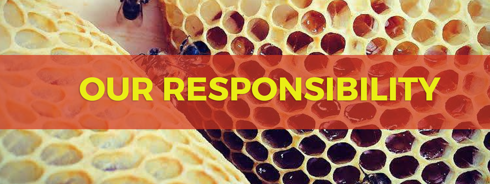

TEACHERS & SWEETENERS OF EARTH
1,125 bees forage 2,000,00 flowers to create one pound of honey. 1/12 a teaspoon per bee in her lifetime. A honeybee colony contains roughly 65,000 honeybees. There is one queen, 55,000 worker bees, and 10,000 drones. The worker bees are female and make up the majority of the hive, the drones are male. Bees are eusocial creatures and have an advanced social order among their colony. They are adept at communicating, using methods such as the “waggle dance” and pheromones as cues to pollen flow and order within the hive.
Mused as “the nectar of the Gods” by ancient Greeks for its multifaceted properties and uses; from beauty elixirs to medicinal salves to delicious healing foods. Bees are responsible for one of the most sacred acts of nature: taking nectar from flowers and transforming it into honey. An elixir, not a commodity. Healing from the hive comes from medicinal properties of floral nectar itself, pollen protein and antiseptic propolis. Honey is made of the simple structure of fructose, glucose, and water. A product of flower nectar that has been stored and lowered in moisture by honeybees until the preferred consistency has been reached. Honey is filled with vitamins, minerals, and antioxidants that can influence health and protect us from many ailments. Varied pollinations can be used as a prebiotic, antiseptic, and can even protect against cancer, Parkinson's, Alzheimer's, and cardiovascular disease. Using honey for holistic purposes is known as apitherapy. It has been proven that honey can heal wounds when common methods such as antibiotics and other synthetic medicines fail. Eat it Raw!
Bees are this generation’s “canary in the coal mine” and they are sadly disappearing at frighteningly alarming rates. Researchers are calling the mass disappearance Colony Collapse Disorder [CCD] and estimate that nearly one-third of all honey bee colonies in the United States alone have vanished. From the discovery of synthetic nitrogen synthesis following World War II, to the development the unsustainable “big agriculture”, to neonicotinoid pesticides and genetically modified organisms there are many environmental impacts that harm both human and bee civilization. These altruistic hard working creatures pollinate some of our favorite fruits and vegetables from apples, oranges to avocados to almonds in addition to the clover and other flowering fields livestock graze on. Bees are key to a sustainable planet. For our very survival. We do our best to source honeys from bee stewards who breed healthy bees free from pesticide exposure, antibiotics and other big-pharm treatments. The health of our bees is integral to the state of our agriculture. It is our responsibility to the earth to take care of our actions and how they effect bee health, which in turn, seismically influences our well-being.